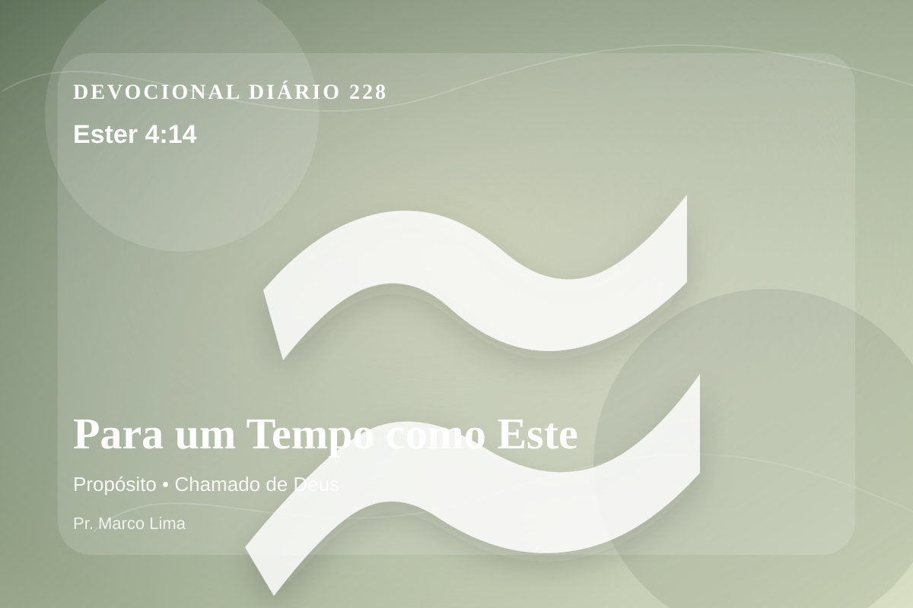

Para um Tempo como Este
Pois, se de todo te calares agora, de outra parte se levantarão socorro e livramento para os judeus, mas tu e a casa de teu pai perecereis; e quem sabe se não foi para tal tempo como este que chegaste ao reino?
Reflexão
Deus usa esta leitura para tirar o coração da religiosidade vazia e levá-lo ao evangelho vivo de Cristo Jesus. No dia 228 do plano anual, o tema de propósito deve levar você a olhar para Cristo, não apenas para si mesmo. Este tema aponta para a maneira como Deus forma o coração do Seu povo por meio da Palavra. A aplicação correta não nasce de frases soltas, mas de uma leitura reverente, contextual e obediente do texto bíblico.
O ensino bíblico aqui chama o coração a sair da superfície. Deus não deseja apenas melhorar comportamentos; Ele quer dar nova vida em Cristo. A reflexão cristã não termina em pensamento positivo; ela conduz ao Senhorio de Jesus, à cruz, à ressurreição e à nova vida que o Espírito Santo produz no coração.
Aprenda esta verdade com simplicidade: Deus não veio apenas ajustar alguns hábitos, mas resgatar a pessoa inteira. O pecado separa, engana e endurece; a graça de Cristo perdoa, reconcilia e ensina um novo caminho. Quem crê em Jesus não recebe licença para continuar igual, mas poder para nascer de novo e viver como filho de Deus.
Este é o evangelho: a salvação não nasce do desempenho humano, mas da obra perfeita de Cristo. Ele tomou sobre Si a culpa do pecado, venceu a morte e chama cada pessoa a responder com arrependimento e fé.
O arrependimento verdadeiro começa quando a pessoa deixa de dizer apenas “eu errei” e passa a dizer “Senhor, pequei contra Ti; tem misericórdia de mim e muda meu coração”.
A boa notícia é esta: quem se arrepende e crê em Jesus encontra perdão, paz com Deus e vida eterna. Essa é a esperança do evangelho para este dia.
Aplicação Prática
- Leia Ester 4:14 lentamente e destaque uma palavra ou expressão central do texto.
- Confesse a Deus um pecado, resistência ou frieza espiritual que esta Palavra revelou.
- Declare sua fé em Jesus Cristo e pratique hoje uma atitude concreta de arrependimento e obediência.
Para Orar
Senhor Deus, eu recebo a Tua Palavra em Ester 4:14 com reverência. Reconheço que preciso de arrependimento, perdão e nova vida. Creio que Jesus Cristo morreu pelos meus pecados e ressuscitou para me salvar. Lava meu coração, governa minha vida e conduz-me em obediência simples ao Teu evangelho. Em nome de Jesus. Amém.
{kind=link}